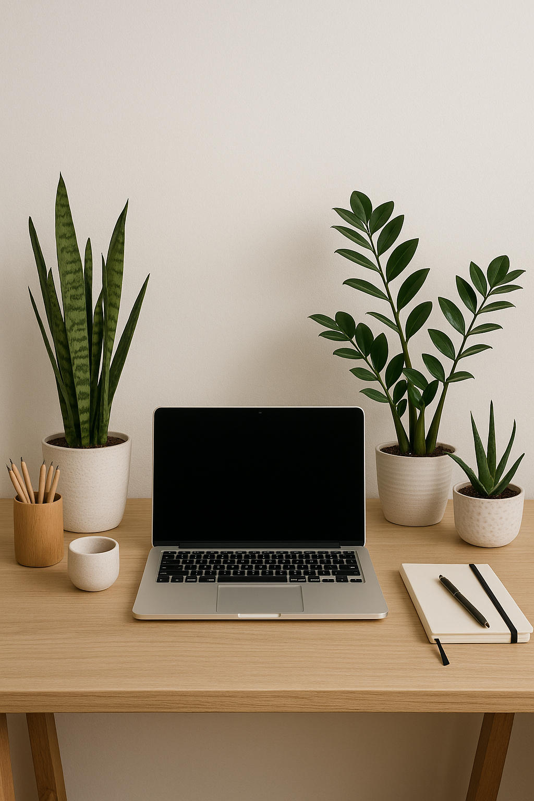

You're sitting at your desk, staring at the screen, trying to focus. But something feels off. The air feels stale. Your space looks uninspiring. Your concentration keeps drifting.
Here's what most people don't realize: your workspace environment directly impacts your ability to focus and feel good while working. And one of the simplest, most effective ways to transform your home office? Desk plants.
But not just any plants. The right desk plants do double duty—they actively purify the air you breathe while creating a calming, focused atmosphere that genuinely helps you work better. Plus, if you choose wisely, they require almost zero effort to keep alive.
In this guide, I'm sharing six proven air purifying plants that thrive in typical office conditions (yes, even low light), need minimal care, and have been shown to improve both air quality and mental clarity. Whether you're working from a corner desk or a full home office setup, these easy care plants will earn their place in your space.
Let's find your perfect desk companion.
Why Desk Plants Actually Matter for Productivity
Before we dive into specific plants, let's talk about why this isn't just aesthetic advice.
Research consistently shows that having plants in your workspace can:
- Reduce stress and anxiety by up to 37% (University of Technology Sydney study)
- Improve concentration and focus by reducing mental fatigue
- Increase productivity by as much as 15% in some workplace studies
- Filter indoor air pollutants like formaldehyde, benzene, and carbon monoxide that off-gas from furniture, carpets, and electronics
Your home office likely has more air pollutants than you think. Printers, furniture, cleaning products—they all release volatile organic compounds (VOCs). Air purifying plants work 24/7 to filter these out naturally, giving you cleaner air to breathe while you work.
The best part? The plants I'm recommending are all low maintenance. No complicated schedules, no fussy requirements. Just real benefits with minimal effort.
The 6 Best Desk Plants for Focus and Clean Air

1. Snake Plant
Sansevieria trifasciata
Why It Boosts Productivity
The Snake Plant's strong, upward-growing leaves create visual order and structure—qualities that subconsciously help your brain stay organized and focused. There's a reason designers love placing these in workspaces; their architectural form keeps visual clutter to a minimum.
Air Purifying Power
Snake Plants are NASA-proven air purifiers. They filter formaldehyde, benzene, xylene, and trichloroethylene—common toxins in home offices. Bonus: they release oxygen at night, unlike most plants, making them perfect if you work late hours.
Care Guide
Light: Tolerates everything from low light to bright indirect light—ideal for offices without windows
Water: Every 2-3 weeks; let soil dry completely between waterings
Difficulty: Beginner-friendly; thrives on neglect
Pro tip: Overwatering kills these plants—when in doubt, wait another week
Styling Tip
Place it in a tall, cylindrical white or concrete planter to emphasize its vertical lines. Position it on one corner of your desk for a clean, modern look that doesn't crowd your workspace.
2. Pothos
Epipremnum aureum
Why It Boosts Productivity
The gentle, trailing nature of Pothos creates visual flow and reduces the harsh, sterile feeling of typical office setups. Studies show that incorporating natural elements—especially plants with organic, flowing shapes—reduces eye strain and mental fatigue during screen time.
Air Purifying Power
Pothos excels at removing indoor air pollutants like formaldehyde, xylene, and benzene. It's particularly effective in spaces with synthetic materials, making it perfect for home offices with laminate furniture or wall-to-wall carpeting.
Care Guide
Light: Thrives in low to medium indirect light; tolerates fluorescent office lighting
Water: Once a week; leaves will droop slightly when thirsty (your cue to water)
Difficulty: Nearly impossible to kill
Pro tip: Trim long vines and propagate them in water to create more plants
Styling Tip
Let it trail from a floating shelf above your desk or place it in a small elevated stand on your desk corner. The cascading vines add dimension without taking up valuable work surface.
Bring Life to Your Workspace with Pothos
Shop Pothos Plant →
3. ZZ Plant
Zamioculcas zamiifolia
Why It Boosts Productivity
The ZZ Plant's glossy, symmetrical leaves reflect light beautifully, which naturally brightens your workspace without harsh artificial lighting. A brighter, naturally lit environment directly correlates with better focus and reduced afternoon energy crashes.
Air Purifying Power
ZZ Plants effectively remove toxins like xylene, toluene, and benzene from indoor air. They're particularly good in spaces with poor air circulation.
Care Guide
Light: Low to bright indirect light; one of the best low light plants
Water: Every 2-3 weeks; extremely drought-tolerant
Difficulty: Ideal for beginners and frequent travelers
Pro tip: Yellow leaves mean overwatering—this plant prefers to be ignored
Styling Tip
Choose a simple black or dark gray pot to complement its deep green leaves. Place it on your desk where it can catch some natural or artificial light to maximize that beautiful glossy reflection.
The Perfect "Set It and Forget It" Plant
Shop ZZ Plant →4. Aloe Vera
Aloe barbadensis miller
Why It Boosts Productivity
Aloe Vera's compact, architectural form takes up minimal desk space while providing maximum visual interest. Its sculptural quality adds a touch of natural beauty without distraction. Plus, knowing you have a plant with practical healing properties within reach can provide a small psychological comfort during stressful work days.
Air Purifying Power
Aloe Vera filters formaldehyde and benzene from the air—two chemicals commonly released by varnishes, floor finishes, and detergents. Like Snake Plants, Aloe also releases oxygen at night, which helps keep your air fresh if you work evening hours.
Care Guide
Light: Bright, indirect light preferred; tolerates some direct sun
Water: Every 2-3 weeks; less in winter. Soil should dry completely between waterings
Difficulty: Very easy; succulent care is forgiving
Pro tip: Brown or soft leaves indicate overwatering—Aloe stores water in its leaves, so it needs very little
Styling Tip
Plant it in a terracotta pot for optimal drainage, or choose a small, modern ceramic planter. Its compact size makes it perfect for smaller desks or alongside other workspace essentials like pen holders.

5. Areca Palm
Dypsis lutescens
Why It Boosts Productivity
Areca Palms are natural humidifiers—they release moisture into the air, which combats the dry conditions created by heating and air conditioning systems. This helps prevent dry skin, scratchy throats, and the headaches that come from working in overly dry environments. When you're physically comfortable, your ability to focus and work efficiently improves significantly.
Air Purifying Power
The Areca Palm is highly effective at removing formaldehyde, xylene, and toluene from indoor air. Its larger size means more surface area for filtering pollutants, making it one of the most efficient air purifying plants you can add to your home office.
Care Guide
Light: Bright, indirect light; can tolerate some lower light but grows best with good lighting
Water: Keep soil slightly moist; water when top inch feels dry (typically every 5-7 days)
Difficulty: Moderate; needs more consistent watering than succulents
Pro tip: Brown tips indicate low humidity or chemicals in tap water—use filtered water and mist leaves occasionally
Styling Tip
Place it in a natural woven basket or modern floor planter next to your desk. Its height and feathery fronds create a lush backdrop that makes your entire workspace feel more vibrant and alive.
6. Boston Fern
Nephrolepis exaltata
Why It Boosts Productivity
Boston Ferns are exceptional at adding humidity to indoor spaces—even more so than most plants. This natural humidifying effect helps keep your respiratory system comfortable, reduces static electricity, and creates an overall more pleasant working environment. The lush, flowing fronds also provide a visual softness that balances the hard lines of typical office furniture and electronics.
Air Purifying Power
Boston Ferns are among the best plants for removing formaldehyde from indoor air. They're also effective at filtering xylene and toluene. Their dense foliage gives them plenty of surface area to work with, making them powerful air cleaners despite their delicate appearance.
Care Guide
Light: Bright, indirect light; avoid direct sun which can scorch leaves
Water: Keep soil consistently moist but not soggy; check every 2-3 days
Difficulty: Moderate; requires more attention to watering and humidity than other plants on this list
Pro tip: Mist the leaves regularly or place on a pebble tray with water to maintain humidity
Styling Tip
Boston Ferns look stunning in hanging planters positioned near your desk, or on a plant stand where their fronds can cascade freely. Their dramatic presence works best when they have room to spread and be appreciated from multiple angles.
Quick Care Tips for All Your Desk Plants
Now that you've met your six options, here are universal care tips that apply to all of them:
Watering Wisdom:
- More desk plants die from overwatering than underwatering. When in doubt, wait.
- Stick your finger 1-2 inches into the soil—if it's dry, water. If it's moist, check again in a few days.
- Use room-temperature water and ensure pots have drainage holes.
Light Reality Check:
- "Low light" doesn't mean no light. Even low light plants need some natural or artificial light.
- If your office has no windows, consider adding a small grow light.
- Rotate plants occasionally so all sides get equal light exposure.
Common Problems Solved:
- Yellow leaves: Usually overwatering or poor drainage
- Brown tips: Often from tap water chemicals or low humidity
- Leggy growth: Not enough light; move closer to a light source
- Pests: Wipe leaves with a diluted dish soap solution; ensure good air circulation
Indoor plant care kit can help with these issues.
Where to Find These Plants & Supplies
Ready to bring these productivity-boosting, air purifying plants into your home office? Here's what you'll need:
Plants:
- Snake Plant (3-4" or 6" pot size)
- Pothos in hanging or standard pot
- ZZ Plant (6-8" pot recommended)
- Aloe Vera (4-6" pot is perfect for desks)
- Areca Palm (choose size based on your space)
- Boston Fern in hanging or standard pot
Essential Supplies:
- Modern ceramic planters with drainage holes (various sizes)
- High-quality, well-draining potting soil
- Succulent/cactus soil mix (for Aloe Vera)
- Drainage saucers to protect your desk surface
- Small watering can with narrow spout for precision watering
- Spray bottle for misting ferns and palms
- Optional: Plant care kit (includes moisture meter, spray bottle, pruning shears)
Pro Tip: Start with 1-2 plants and see how they fit into your routine before filling your entire desk. Quality over quantity applies to desk plants, too.
Creating Your Productive, Plant-Filled Workspace
Here's what I want you to remember: adding desk plants isn't about perfection. It's about taking one small, intentional step toward a workspace that genuinely supports your wellbeing and focus.
You don't need to become a plant expert overnight. Start with one easy care plant from this list—I'd recommend the Snake Plant, ZZ Plant, or Pothos if you're hesitant. Place it where you can see it while you work. Water it when the soil is dry. That's it.
Within a few weeks, you'll notice the difference. Your space will feel more alive. The air will feel fresher. And those moments when you glance away from your screen and see something green and growing? Those matter more than you might think.
Your workspace should work for you, not against you. These six air purifying plants are some of the simplest, most effective tools you have to create a home office that helps you do your best work while actually feeling good.
Ready to choose your first desk plant? Start with the one that spoke to you most while reading this guide. Trust your instincts—and enjoy watching your space (and your focus) transform.
Have questions about caring for your specific plants or styling your workspace? Drop a comment below or subscribe to our newsletter for more practical home office tips and sustainable living ideas.
Disclosure: This post contains affiliate links, which means we may earn a small commission if you make a purchase through our links, at no additional cost to you. We only recommend products we genuinely believe will help you create a better workspace. Your support helps us continue creating helpful content like this.